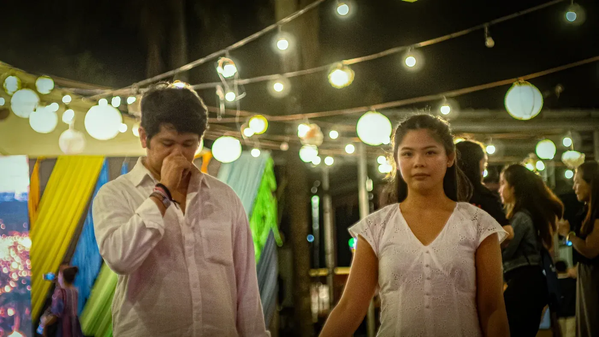
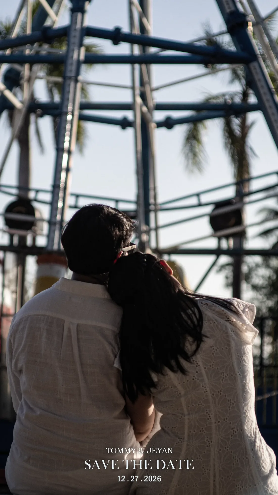

Sunday
December 27, 2026
One sky. One date. Save it twice.
Two paths. One sky.
Drag our two lanterns to each other and watch them meet.Scroll down for our story, or tap Menu (bottom‑right) any time for the wedding details & RSVP.
Some lights drift quietly.
Some paths take time.
Some journeys are not meant to be rushed.
Until two lights finally find the same sky.

Every journey leaves traces of light.

The journey continues here.
December 27, 2026
One sky. One date. Save it twice.
St. Therese Parish
Please be seated by 1:00 PM · Shrine of St. Therese of the Child Jesus, Newport City, Pasay
Gallio Events Hall
Talisay Hall · Aseana City, Parañaque · doors 3:30 PM
Smart Formal
Cream, sage, dusty rose, and soft neutrals
No spoilers. The full story boards on the day itself.
Everything for the day: itinerary, directions, attire, entourage, gifts and RSVP. Tap any glowing marker below to open it.
Tap any marker to open the details · stops 1–6
Quietly made. Deeply kept.